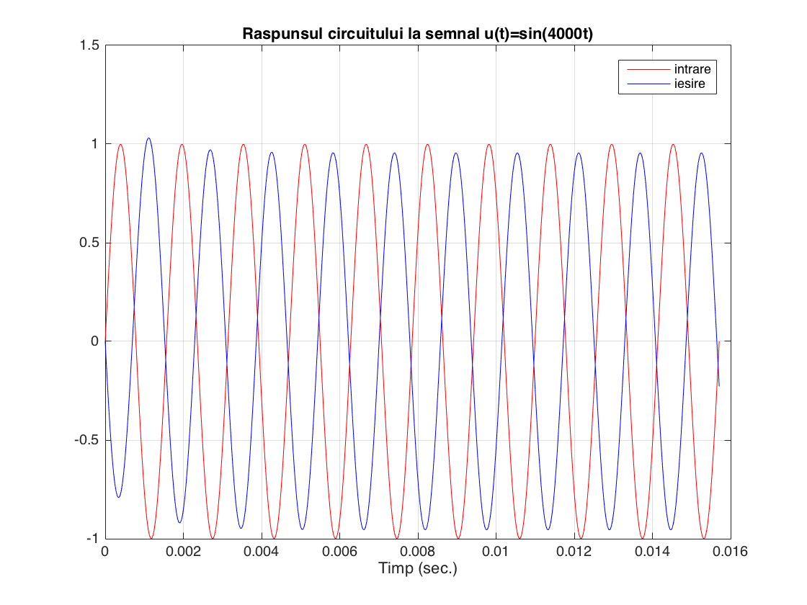
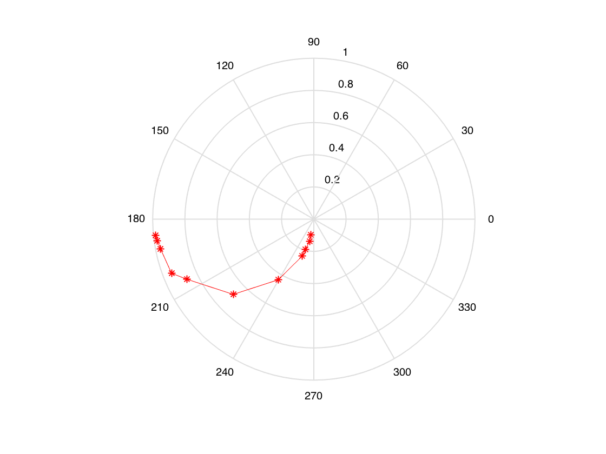
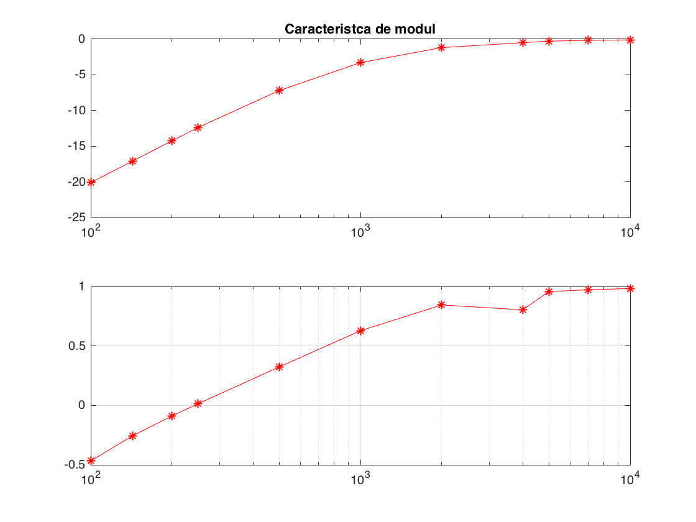

Contents
clear
R1=1e3;R2=1e3;R3=1e3;R4=2.2e3;R5=1e3;C1=1e-6;
wc = 1/R2/C1;
w=4000;
T=2*pi/w; Te=T/50;
sim('circuit_tema');
reading data from simulink
t=data.time;
u=data.signals(1,2).values;
y=data.signals(1,1).values;
plot(t,u,'r',t,y,'b');
title(['Raspunsul circuitului la semnal u(t)=sin(',num2str(w),'t)'])
legend('intrare','iesire');
xlabel('Timp (sec.)')
shg;grid

tabel
tabel = [100, 0.09876, 0.5655, 0.5831;
143, 0.1398, 0.3954, 0.4077;
200, 0.1937, 0.2827, 0.2919;
250, 0.2403, 0.2262, 0.2337;
500, 0.4361, 0.1131, 0.1173;
1000, 0.6843, 0.05655, 0.05894;
2000, 0.8726, 0.02827, 0.02962;
4000, 0.9448, 0.1414, 0.01486;
5000, 0.9689, 0.01131, 0.0119;
7000, 0.9802, 0.008078, 0.008507;
10000, 0.9885, 0.005655, 0.005959]
w = tabel(:,1);
Ass = tabel(:,2);
tu = tabel(:,3);
ty = tabel(:,4);
tabel =
1.0e+04 *
0.0100 0.0000 0.0001 0.0001
0.0143 0.0000 0.0000 0.0000
0.0200 0.0000 0.0000 0.0000
0.0250 0.0000 0.0000 0.0000
0.0500 0.0000 0.0000 0.0000
0.1000 0.0001 0.0000 0.0000
0.2000 0.0001 0.0000 0.0000
0.4000 0.0001 0.0000 0.0000
0.5000 0.0001 0.0000 0.0000
0.7000 0.0001 0.0000 0.0000
1.0000 0.0001 0.0000 0.0000
prelucrare date
phi_s=tu-ty;
phi_r=phi_s.*w;
phi_g=rad2deg(phi_r);
figure(1);
polar(phi_r, Ass, '-r*')

bode
figure(2);
A_ss_dB = 20*log10(Ass);
tu=tabel(:,2);
ty=tabel(:,3);
phi_s=tu-ty;
subplot(211);title('Caracteristca de modul')
semilogx(w,A_ss_dB,'r*-');grid;hold
subplot(212);title('Caracteristca de faza')
semilogx(w,phi_s,'r*-');grid;shg
Current plot released
